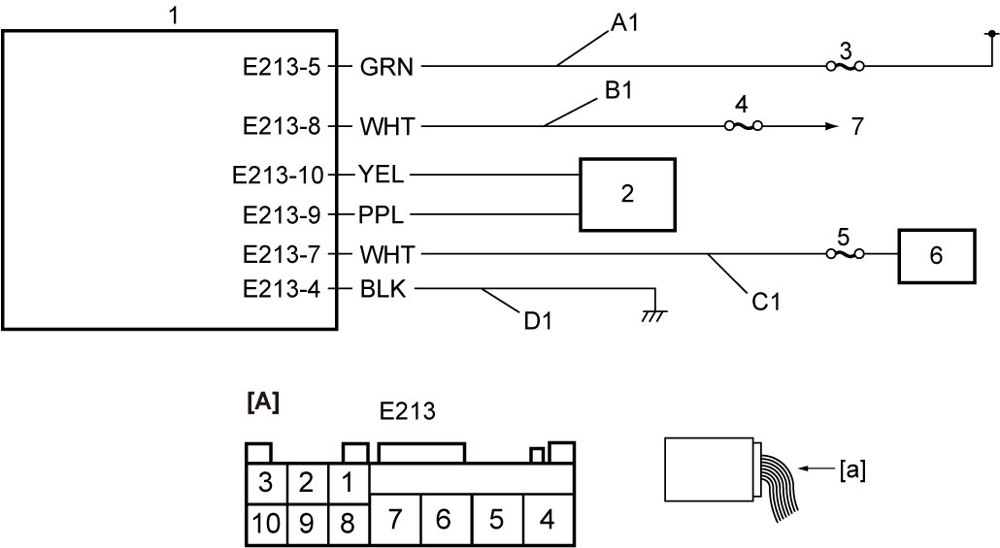

10I
| DC/DC Converter Power Supply and Ground Circuit Check (A/T Model) |
Circuit Diagram

 "Expand image")
| [A]: | DC/DC converter connector (View: [a]) | D1: | DC/DC converter ground circuit | 4. | “IG1 SIG” fuse |
| A1: | DC/DC converter power supply circuit | 1. | DC/DC converter | 5. | “T/M5” fuse |
| B1: | Ignition “ON” signal circuit | 2. | ENG A-STOP control module | 6. | TCM |
| C1: | DC/DC converter output circuit | 3. | “DCDC2” fuse | 7. | To ignition switch (ignition switch model) or IG1 relay (keyless push start model) |
Troubleshooting
NOTE:
Before performing, check that related fuses of DC/DC converter power circuit have not blown out.
If any fuse has blown out, replace the fuse and check circuits connected to the blown fuse for short circuit to ground.
| Step | Action | Yes | No |
|---|---|---|---|
| 1 |
Battery check
1)Check that battery voltage is 12 V or more.
Is check result OK?
|
Go to Step 2.
|
Check battery and generator.
•M16A model: Refer to Battery Inspection:M16A and Generator Test:M16A
•K14C model: Refer to Battery Inspection:K14C and Generator Test:K14C |
| 2 |
DC/DC converter power supply circuit check
1)Set ignition “OFF”.
2)Disconnect DC/DC converter connector.
3)Check for proper terminal connection to DC/DC converter connector.
4)If connections are OK, check that voltage between “A1” circuit and ground is battery voltage.
Is check result OK?
|
Go to Step 3.
|
Repair or replace defective wire harness.
|
| 3 |
Ignition “ON” signal circuit check
1)Set ignition “ON”.
2)Check that voltage between “B1” circuit and ground is battery voltage.
Is check result OK?
|
Go to Step 4.
|
Repair or replace defective wire harness.
|
| 4 |
DC/DC converter ground circuit check
1)Set ignition “OFF”.
2)Check that resistance between “D1” circuit and ground is less than 1 Ω.
Is check result OK?
|
Go to Step 5.
|
Repair or replace defective wire harness.
|
| 5 |
DC/DC converter output circuit check
1)Connect DC/DC converter connector.
2)Disconnect TCM connector.
3)Check for proper terminal connection to TCM connector.
4)If connections are OK, set ignition “ON”.
5)Check that voltage between “C1” circuit and ground is battery voltage.
Is check result OK?
|
DC/DC converter power supply and ground circuits are in good condition.
|
Check wiring harness for open, short circuit to battery and short circuit to ground. If wiring harness is in good condition, replace DC/DC converter and recheck DC/DC converter power supply and ground circuits.
|